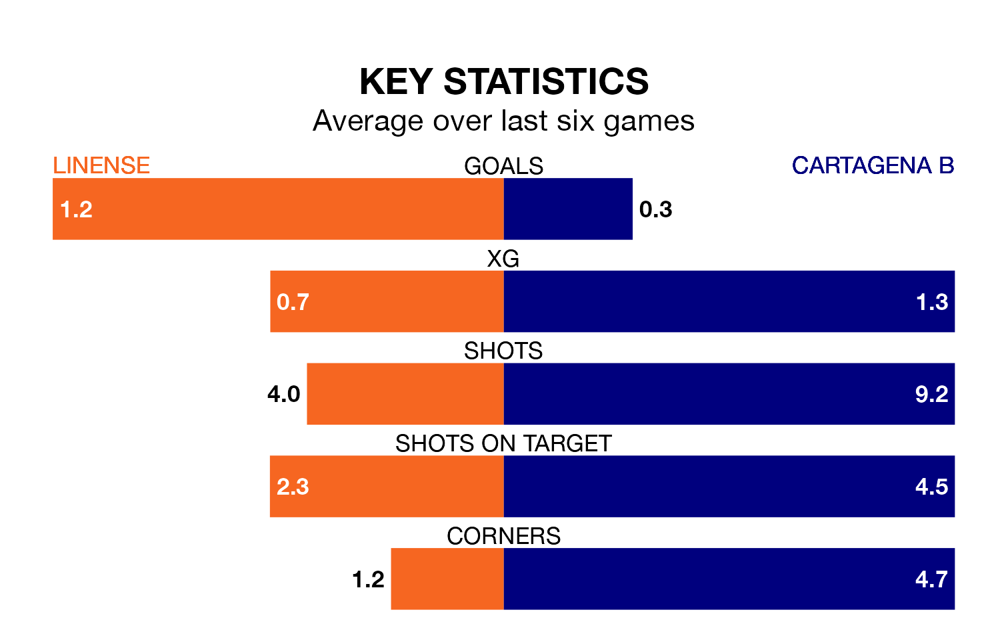

Cartagena B come to Estadio Municipal de La Línea de la Concepción to play Linense on early Sunday in terrible form, having collected just one point from their last six games.
The visitors have drawn just one of their last six fixtures, while Linense have two wins and two draws.
Cartagena B are bottom of the table after 32 games, of which they have won three and drawn 11, earning 20 points.
Linense are nine places ahead of the visitors in ninth, with 11 wins and 10 draws putting them on 43 points.
With 23 goals in 32 games so far this season, Cartagena B are the league's joint-third-lowest scorers with 0.7 goals per game. And they are conceding more than average, letting in 49 goals at a rate of 1.5 per game.
The home team, meanwhile, are average scorers, with 1.0 goal per game. They have also conceded 1.0 goal per game.
Linense's last match was on Sunday, a 2-1 win against Orihuela CF, with Francisco Carbià Barrera and Juan Carlos Fernández Marín getting the goals for Linense.
Cartagena B lost 2-0 against Cádiz B last time out, also on Sunday.
Updated: 07:59 (UTC), 26/04/24